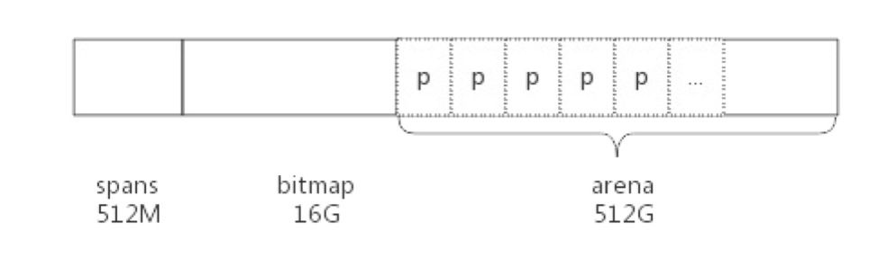
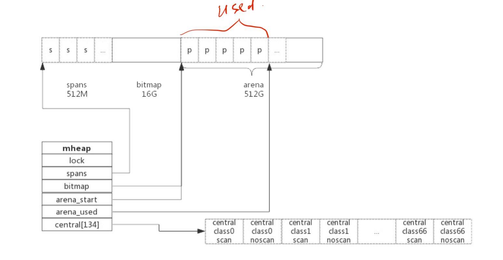
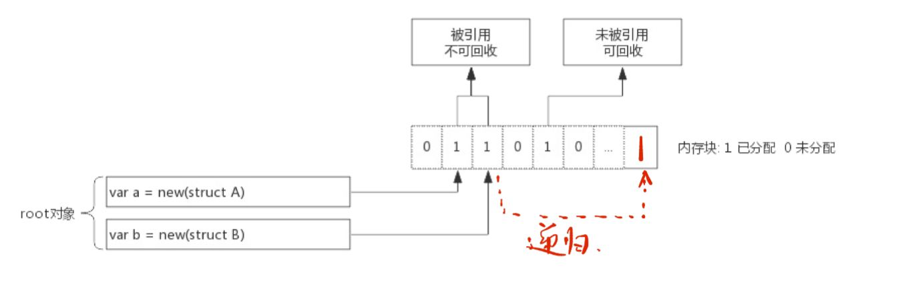

GO内存管理与垃圾回收
内存分配

- 堆区: arena 512G，方便管理将其划分成了一个个page，大小为8kb一个页。
- spans: 存放span指针，每一个span中包含1个或多个连续页(后者是因为大对象)
- bitmap: 和spans都是为了管理堆区
根据对象大小,golang会分了一系列的class/object
span的结构定义：
1 | type mspan struct{ |
各个线程通过mcentral向span申请内存，且为了避免不断的加锁，每个线程都被分配了span的cache，另每一个mcentral只管理特定的class的span

mheap管理全部内存
总结一下内存分配过程：
- 获取当前线程的私有cache
- 根据需要分配的内存匹配一个合适的class的id
- 先从mcache中的alloc[class]链表查看有无可用的span
- 没有则从mcentral中申请一个可用的span到cache中
- 否则从mheap中申请新的span到mcentral中
- 获取当前span中空闲对象地址并返回
垃圾回收机制(GC)
-将已经分配了但未被引用的内存回收（通过标记进行区分）。
垃圾回收从root对象开始，将其标为”被引用”，但是由于引用的内存可能会继续的引用其它的内存，所以我们需要递归的进行标记。

span中有一个gcmarkBits用于标记内存块引用情况。通过与allocBits进行配合即回收时allocBits指向gcmarkBits并比对，就能够巧妙地找出需要回收的内存。
三色标记:
便于理解而抽象出来的三种状态：
- 灰色：在标记队列中等待
- 黑色：对象已被标记，gcmarkBits对应位为1(此次GC不会回收)
- 白色：对象未标记,gcmarkBits对应位为0，allocBits位对应1(此次GC会被回收)
值得注意的是，golang为了避免GC扫描导致内存变化而停掉所有的Goroutine即STW。
逃逸分析
编译器决定内存分配的位置
对于在函数中申请的对象：
- 分配在栈中，函数执行结束显然自动回收
- 分配在堆中，交由GC处理
逃逸策略：
- 一般对象在函数外部没有引用，则会放入栈中，但有时由于对象太大超过了栈的存储空间大小，则也会放入堆中
- 函数外部有引用，必定放在堆中
1 | func GetUserInfo(userInfo UserData) *UserData { |
在这个例子中，返回的是一个对象的地址，编译器会认为在函数外部还会被使用，所以将其分配在了堆上。
正确写法：
1 | func GetUserInfo(userInfo *UserData) UserData { |
逃逸场景：
- 上面介绍了栈空间不足会产生逃逸
- 指针指向的内存地址为堆，函数内部调用
ptr := new(MStruct) - 动态类型，函数的参数为interface{}
- 闭包引用：函数申明的局部变量被闭包引用
1
2
3
4
5
6
7
8
9
10
11
12
13
14
15
16
17
18
19
20
21func Fib() func int{
a, b := 0, 1
//a, b被闭包引用
return func() int{
a, b = b, a + b
return a
}
}
func main(){
f := Fib()
for i:=0;i<3;i++{
fmt.Printf("compute result is: %d\n", f())
}
}
out:
compute result is: 1
compute result is: 1
compute result is: 2
可见当函数执行结束后a, b并未被栈自动回收，而是本身的值被修改了，属于隐式的内存逃逸。
可通过编译参数 go build -gcflags=-m 查看逃逸情况。
本博客所有文章除特别声明外，均采用 CC BY-NC-SA 4.0 许可协议。转载请注明来自 Legendary！